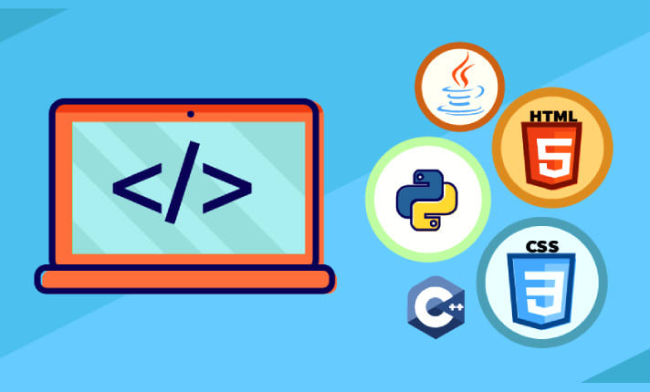

¿Consejos para empezar a programar?
1. Elige un lenguaje de programación: Hay muchos lenguajes de programación, pero algunos de los más populares para crear páginas web son HTML, CSS, JavaScript, PHP y Python.
2. Aprende los conceptos básicos: Antes de empezar a programar, es importante que entiendas los conceptos básicos de la programación, como variables, condicionales, bucles y funciones.
3. Practica, practica, practica: La práctica es la mejor manera de aprender a programar. Comienza con proyectos pequeños y aumenta la complejidad a medida que avanzas.
4. Utiliza recursos en línea: Hay muchos recursos en línea disponibles para aprender a programar, como tutoriales, videos y cursos en línea.

Tutoriales para crear una página web
1. HTML y CSS: Aprende a crear estructuras de páginas web con HTML y a darles estilo con CSS..
HTML CSS2. JavaScript: Aprende a agregar interactividad a tus páginas web con JavaScript.
JavaScript3. PHP: Aprende a crear páginas web dinámicas con PHP.
PHP4. Python: Aprende a crear páginas web con Python utilizando frameworks como Django o Flask.
Python Recursos adicionales
1. Codecademy: Plataforma de aprendizaje en línea que ofrece cursos y tutoriales sobre programación.
2. UFreeCodeCamp: Plataforma de aprendizaje en línea que ofrece cursos y proyectos sobre programación.
3. W3Schools: Plataforma de aprendizaje en línea que ofrece tutoriales y referencias sobre programación web.
4. YouTube: Canal de YouTube de programadores y desarrolladores web que ofrecen tutoriales y consejos sobre programación.